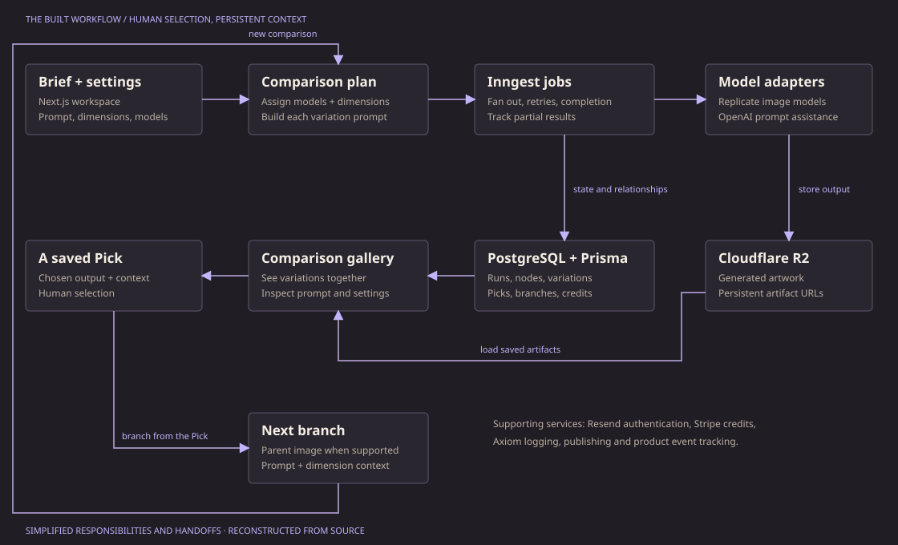

Control what changes.
Fixed settings isolate a direction. Varied dimensions explore a range. Model selection can hold one provider steady, distribute across providers, randomize, or apply each chosen model to the dimension set.
Varimuse / Independent product
Which model, style, or direction is worth another round? I built Varimuse to put the alternatives in front of you: vary deliberately, compare the results, and branch from the one that earns your attention.
01 / The question
Every new model added another choice. So did style, lighting, mood, composition, and the wording of the prompt. Exploring those choices one at a time made it easy to lose track of what changed and why a result worked.
Varimuse turned those choices into a workspace. Start with one brief. Decide which dimensions stay fixed and which should vary. Choose a single model, distribute work across models, or run each selected model against the comparison set.
“Best” meant best for this intention. A model could be useful for one visual direction and a poor fit for another. The product made those differences available for judgment.
02 / The evidence
“An artistic expression of fatherhood. Abstract art. Vibrant colors.”
These two published Picks share the original prompt and a fixed Ideogram V3 Turbo configuration. The recorded style changes from watercolor to illustration. One becomes an intimate embrace; the other becomes roots, growth, and light.
The archive also preserves cabin studies, night scenes, fractals, and the exploration of Varimuse's own identity. Original prompts and recorded settings remain attached to the examples.
Browse the preserved gallery →03 / The product
The useful unit was a decision followed by another experiment. A Pick kept the output and its context together. Branching carried that starting point into a new generation, with a history you could return to.
Fixed settings isolate a direction. Varied dimensions explore a range. Model selection can hold one provider steady, distribute across providers, randomize, or apply each chosen model to the dimension set.
Each variation carries its model configuration, prompt, dimensions, status, and stored artifact. The comparison interface brings outputs together, with details available when a particular result matters.
Picks and branching preserve a path through the work. Compatible providers can reuse the parent image; the workflow also carries the original prompt and dimension context forward.
Background jobs, provider adapters, partial results, retries, credits, authentication, publishing, and product events supported the experience around the generation calls.
04 / The system
Next.js handled the workspace. Inngest distributed the generation work. PostgreSQL kept the relationships between generations, variations, Picks, and branches; R2 kept the artwork.

Reconstructed from the application source, including provider assignment, dimension distribution, generation events, and branching.
05 / The larger idea
A comparison becomes more valuable when the selection has context: what the person asked for, which models and settings were tried, and what they chose to keep.
That suggests a broader direction: an orchestrator could use the task, constraints, and evidence from evaluations to decide which models to try, compare the candidates, and route the next step. Human selections could provide feedback about what actually worked for the task.
Varimuse built the comparison and branching workflow. The next direction is to make the selection process itself more informed—so the system helps decide where the next generation effort belongs. An automatically learned model-ranking system was not part of this archived implementation.
Distribute settings and models.
Preserve the choice and context.
Use evaluation to guide model routing.
06 / The iteration
The repository shows a product moving from its initial specification into working generation, comparison, and the practical details of returning for another session.
The initial application established generations, model configurations, variation, comparison, saved Picks, and branching history.
Payments, authentication hardening, rate limits, an admin dashboard, publishing, and credit handling received focused work.
Provider adapters and the model registry were consolidated. Model selection, dimension context, onboarding, documentation, and prompt-building behavior were refined.
Product event logging and metrics were added, while the language of the interface became more consistent around Picks.
What I carry forward
Varimuse brought interface design, asynchronous orchestration, model integration, and creative decision-making into one product. It left behind real outputs and a useful question: how should a system decide what to try next?